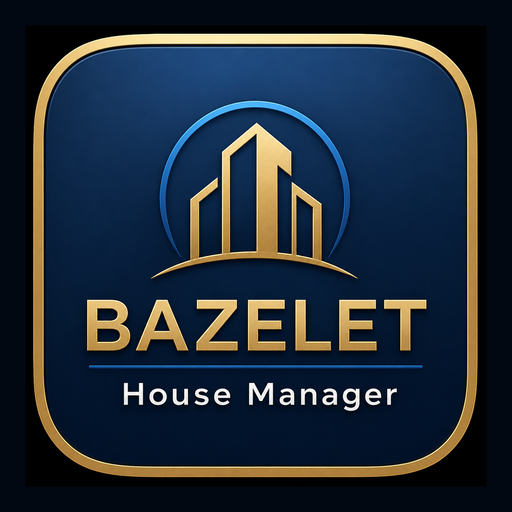

BAZELET
ניהול בתים חכם
להתקנת האפליקציה במסך הבית:
הוסף אייקון BAZELET למסך הבית במכשיר שלך כך:
באייפון – לחיצה על ”...“ ואז בחר ”שיתוף“
ואז ”הוסף למסך הבית“.
ואז ”הוסף למסך הבית“.
באנדרואיד – לחיצה על ”⋮“ ואז בחר ”הוסף דף ל-“
ואז ”מסך הבית“.
ואז ”מסך הבית“.
לאחר ההתקנה, פתיחה מהאייקון תעביר אוטומטית למערכת BAZELET.